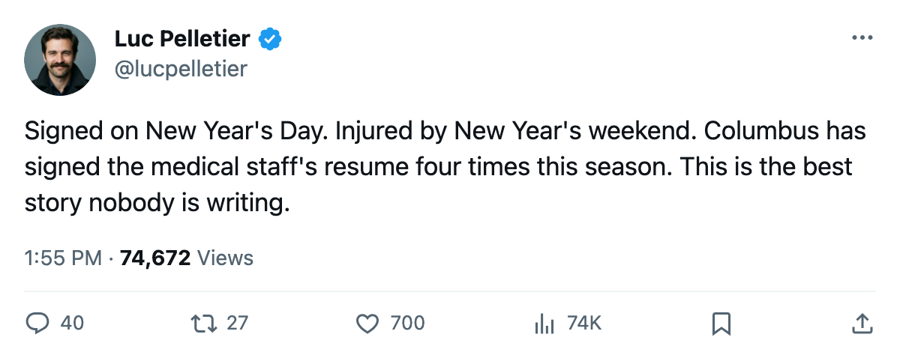

The Infirmary: Columbus Signed 2 Centers on January 1 and Both Are Out Until February
Espen Knutsen and Tyler Wright landed on the injured list 3 to 4 days after their signatures dried. Knutsen is on his 4th trip this season.
 Luc PelletierMontreal correspondent · Home Ice Network
Luc PelletierMontreal correspondent · Home Ice Network
 Columbus Blue Jackets signed
Columbus Blue Jackets signed  Espen Knutsen82 for $539,060 and Tyler Wright80 for $606,350 on 2006-01-01. Four days later both men were injured. Knutsen carries a rib designation with a return date of 2006-02-20. Wright has an abdomen issue, out until 2006-02-19.
Espen Knutsen82 for $539,060 and Tyler Wright80 for $606,350 on 2006-01-01. Four days later both men were injured. Knutsen carries a rib designation with a return date of 2006-02-20. Wright has an abdomen issue, out until 2006-02-19.
The onset window for both injuries is between 2006-01-04 and 2006-01-05. The signings were 2006-01-01. That puts the injuries at 3 to 4 days after the ink dried.
Knutsen is on his 4th injury spell this season. The league designated the body part as a rib for this trip. The previous 3 carry no named part in the record. He has been on the list in October, November, December, and now January. The Columbus medical staff has seen him four times in a 16-game span. The club's total injury ledger reads 34 spells and 269 days lost, 2nd most in the league behind  New York Islanders's 348.
New York Islanders's 348.
Columbus also has  Dimitri Kalinin84 (arm, return 2006-01-08) and
Dimitri Kalinin84 (arm, return 2006-01-08) and  Todd Marchant84 (knee, return 2006-01-30) on the list. Four players on the IR, 5 total men out according to the club count.
Todd Marchant84 (knee, return 2006-01-30) on the list. Four players on the IR, 5 total men out according to the club count.
And the club is tied 4th in the Western Conference at 47 points on 38 games. They have done it with a top-3 defense (83 goals against, fewest in the conference after  New Jersey Devils's 83 at the same count) and a goaltending corps that has leaned on
New Jersey Devils's 83 at the same count) and a goaltending corps that has leaned on  Pascal Leclaire93 for 74 percent of the schedule.
Pascal Leclaire93 for 74 percent of the schedule.
The 2006-01-01 signings were meant to deepen the center group after Marchant went down in mid-November. The club got zero shifts from Knutsen and Wright before the injuries arrived.  Marc Denis92 carries 9 starts in relief of Leclaire. The 3rd goaltender is
Marc Denis92 carries 9 starts in relief of Leclaire. The 3rd goaltender is  Fred Brathwaite81 with 3 appearances.
Fred Brathwaite81 with 3 appearances.
The league records the injury designation. It records no cause. Columbus signed two men and the record shows them on the injured list within the same 48-hour window.
